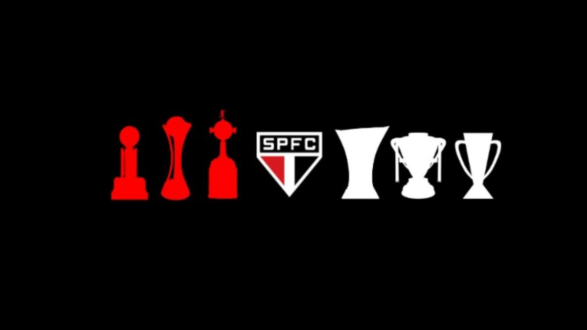
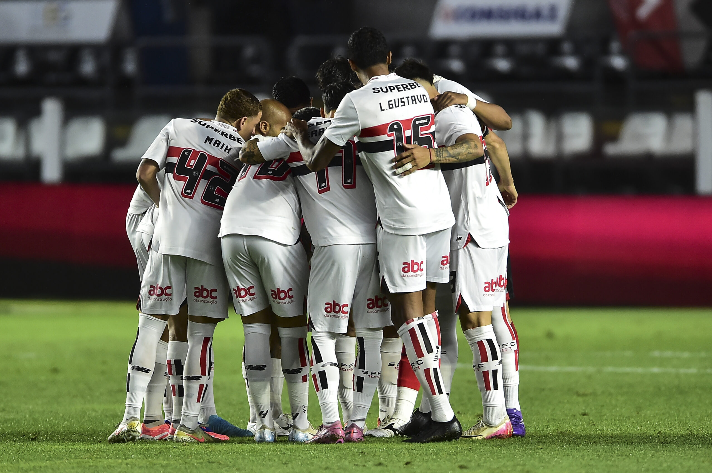

São Paulo FC
História do Clube
O São Paulo Futebol Clube, fundado em 25 de janeiro de 1930 a partir da fusão do Paulistano e da Associação Atlética das Palmeiras,
é um dos clubes mais vitoriosos do Brasil.
Conhecido como "Clube da Fé" e "Soberano", acumulou 42 títulos principais, sendo o único brasileiro tricampeão mundial (1992, 1993, 2005)
e campeão de todas as competições que disputou.
Pontos da História do SPFC:
Fundação e Refundação:
Fundado em 1930, teve um breve encerramento e foi refundado em 16 de dezembro de 1935, data que também é
historicamente celebrada.
O Mais Querido:
Ganhou esse apelido na década de 1940, após se uniformizar com as cores da bandeira paulista, ganhando apoio popular.
Era de Ouro (anos 90):
Sob o comando de Telê Santana, o clube conquistou o mundo com os títulos do Mundial em 1992 e 1993, além das Libertadores.
Tricampeonato Brasileiro:
Foi o primeiro clube a vencer o Campeonato Brasileiro três vezes consecutivas (2006, 2007, 2008) na era dos pontos corridos.
Estadio do Morumbis
Inaugurado oficialmente em 1960, é o maior estádio particular do Brasil, servindo como a casa tricolor.


Elenco de 2026
Goleiros:
Carlos Coronel, Felipe Preis, João Pedro, Rafael, Young.
Zagueiros:
Arboleda, Alan Franco, Dória, Rafael Tóloi e Sabino.
Laterais:
Cédric Soares, João Moreira, Lucas Ramon, Maik, Enzo díaz, Nicolas e Wendell.
Volantes/Meias:
Pablo Maia, Marcos Antônio, Danielzinho, Negrucci, Cauly, bobadilla, Hugo Leonardo, Luan e Pedro Ferreira
Atacantes:
Lucas Moura, Calleri, Luciano, Ferreirinha, André Silva, Gonzalo Tapia, Artur, Luca, Paulinho e Ryan.
Tabela de Títulos
| Competição |
Títulos |
Temporadas/Anos |
| Mundial de Clubes |
3 |
1992, 1993, 2005 |
| Copa Libertadores |
3 |
1992, 1993, 2005 |
| Campeonato Brasileiro |
6 |
1997, 1886, 1991, 2006, 2007, 2008 |
| Copa do Brasil |
1 |
2023 |
| Copa Sul-Americana |
1 |
2012 |
| Supercopa da LIbertadores |
1 |
1993 |
| Recopa Sul-Americana |
2 |
1993,1994 |
| Copa Conmenbol |
1 |
1994 |
| Supercopa do Brasil |
1 |
2024 |
| Torneio Rio-São Paulo |
1 |
2001 |
| Campeonato paulista |
22 |
1931, 1943, 1945, 1946, 1948, 1949, 1953, 1957, 1970, 1971, 1975, 1980, 1981, 1985, 1987, 1989, 1991, 1992, 1998, 2000, 2002, 2005 |
SiteFãTricolor